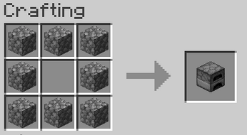

mesa de crafteo con 8 bloques de piedra.
mesa de crafteo con 8 bloques de piedra.
El horno es un bloque muy im`portante dentro del juego, ya que es usado para cocinar los objetos
El horno se consigue principalmente en una mesa de crafteo con 8 bloques de piedra.

Tambien se pueden conseguir en diversas estructuras.